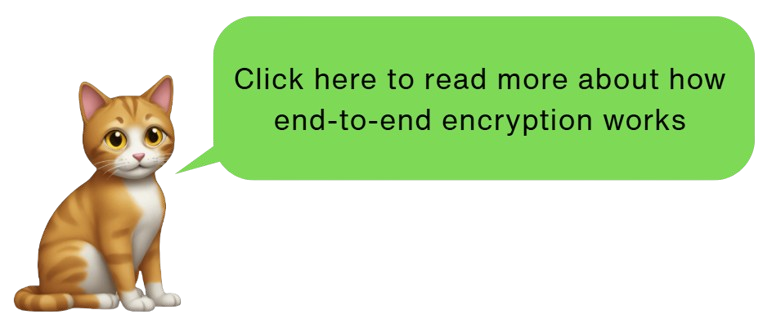
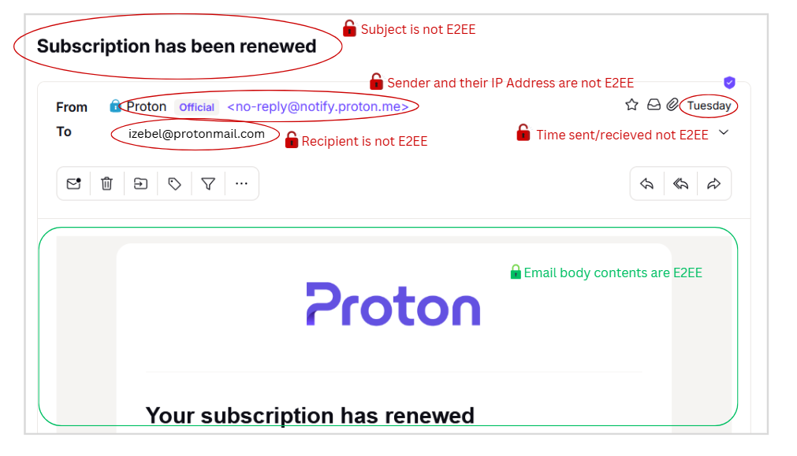
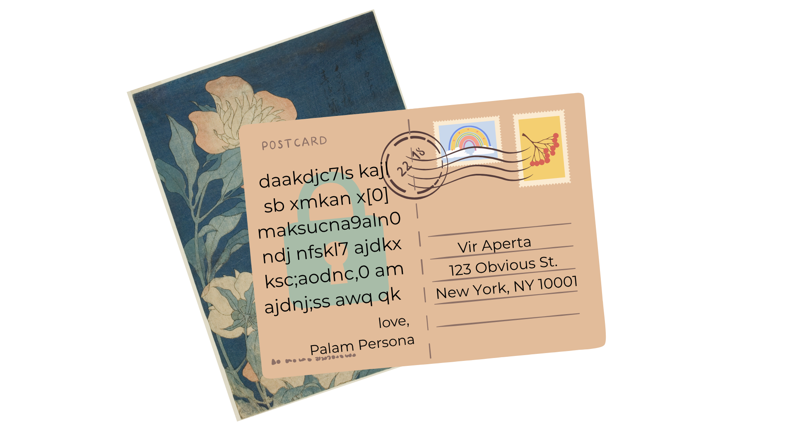

🗓️ March 7, 2026
👩💻 Izebel, RowanTree Security
⏱︎ 10 min read
Earlier this week my Proton subscription renewed. On Thursday, 404 Media posted an article with the headline "Proton Mail Helped FBI Unmask Anonymous ‘Stop Cop City’ Protester."
This isn't the first time Proton - a company marketing itself as privacy-forward - has ended up in the headlines. Nor is it the first time folks are questioning how safe Proton really is.
As a security professional, my answer is: It depends on what you're trying to protect, who you're trying to protect it from, and if you are using the right options to set up and access Proton for your situation. No email provider can overcome the fundamental security and privacy limitations of email as a medium. What matters is understanding exactly what Proton Mail and other privacy-forward email providers protect, what they can't, and how to use these tools accordingly.
In spite of the recent controversy, I'm still a Proton subscriber. I'll explain here why I choose to trust Proton with my data, my clients' data, and the limits of that trust. I'll also explain some of the technical stuff I think a lot of people misunderstand about Proton Mail, and "private" email in general, so that you're better prepared to make an informed choice yourself.
The number one reason I am a Proton user is that it is the most widely used email provider that does end-to-end encryption (E2EE) on your message contents by default. E2EE means that only you and your recipient can read your messages; not hackers, not Proton, not a government served with a legal demand. That last part is what makes it meaningfully different from "encrypted" email in the general sense, and why it matters which provider you choose.
When email isn't E2EE, as with Gmail, or Yahoo, or really any "normal" email provider, not only is the company running your email service probably selling your data to advertisers, they can decrypt your messages. In other words: they can read your email... And so can any government that serves them with a legal demand, or any hacker who manages to breach their servers.
But E2EE email only works automatically when both sender and recipient use the same provider. That's why popularity matters: if more people use Proton, more of your emails will be automatically protected.

Security and privacy doesn't begin and end with end-to-end encrypted message contents though - which I think is one of the fundamental misunderstandings of "private" email that I'd like to address.
There are some common misconceptions out there about the limits of E2EE email that are important for everyone to get right. Take a look:

Again, when using an E2EE email provider, your email message contents are automatically E2EE only when sent to and from the same provider.Only Proton to/from Proton emails are automatically E2EE. Only Tuta to/from Tuta emails are automatically E2EE. If you send Proton to Tuta, or vice versa, it's not E2EE. If you send Proton to Gmail, or Yahoo, or any other email provider, it's not E2EE.
It is possible to achieve E2EE with different providers if you take additional steps. For example: Exchanging PGP keys, or setting a password to view the email shared via a different communication channel, like Signal. But that's tricky for most laypeople. I think creating a free Proton Mail account is much easier for the average person to understand, and maybe they're using Proton already since it is the most popular option out there. So with Proton, there are the greatest odds that my message contents will automatically be E2EE.
Who I am emailing, the date and time, and most other metadata are not protected by any email provider.¹
| Type of Data | How Protected |
|---|---|
| Email contents | ⚠️ Only E2EE w/ same provider - or extra steps |
| IP address | ⚠️ Not always protected unless using Tor (or sometimes: a VPN) |
| Email addresses | ⛔ Not protected |
| Most other metadata | ⛔ Not protected |
| Payment data (if a paid account) | ⛔ Not protected from legal action |
| Backup email | ⛔ Not protected from legal action |
Your IP address is only protected under specific circumstances. An IP address is like a digital fingerprint for your internet connection. It's quietly captured by virtually every internet service you interact with. Your internet provider (or a government) can use your IP address to trace your online activity back to your physical location and identity.
Your IP address is typically logged (at a minimum) by your email provider whenever you log into your account, as well as whenever you send an email. A VPN or Tor masks your actual IP address from the provider by routing your internet traffic through another computer managed by that service, somewhere else. That other computer's IP gets logged instead. But unfortunately, sometimes using a VPN isn't enough to protect high-risk users, and the VPN's IP can still be traced back to you.
Your VPN provider is also a company that may be required to respond to legal action. Just like your email provider, the VPN company may also hold important data, like your actual IP address, payment data, name, etc. Some unethical VPN providers even sell your data to advertisers.²
Using Proton Mail provides an extra layer of protection when it comes to protecting your IP address: When Proton recognizes that a VPN is in use, it doesn't log the IP address at all.³ So if the Swiss government demands that Proton turn over the IP address associated with an account, Proton doesn't have anything to share.

If you're reading this and beginning to think something like, "Wow, that's a lot of data that's not protected without a lot of extra work... or at all..." - you would be correct. Security folks like me like to say that sending an email is like sending a postcard.
Sending email Proton to Proton, or Tuta to Tuta, is like sending a postcard where the message is written in a code that's impossible for someone else to decipher - as long as your encryption keys are a secret. The message still needs to get to its destination, so who the postcard is sent to, can't be in code. Other metadata, like the timestamp (the postmark if you will) also can't be in code - it's relying on other internet infrastructure that the email provider can't do anything about.
All software companies are subject to the laws of the countries they are based in - including Proton, which has to follow Switzerland's laws. Swiss law is a bit more privacy respecting than US law, but international treaties can sometimes force the Swiss government to force Proton to turn over data about your account. That data can include:
Unlike companies like Meta, or Google, Proton tries to minimize the number of legal requests they comply with, and rejects more of the nonsensical ones⁴, but there will always be some risk of potentially sensitive data becoming available under certain circumstances. If that's you, proceed accordingly: Take advantage of tactics that would allow you to obscure your identity, or communicate via a different method.
The ease of setting up a free ProtonMail account, and the brand familiarity, mean that if someone wants their message to be E2EE when reaching out to me for the first time and they're not already using Proton, that's not intimidating, or technically difficult.
In addition to being the most widely accepted option for E2EE email out there, the ProtonMail user interface is clean and user-friendly, it's easy to set up with a custom domain, and I appreciate that I get a bunch of email aliases with my plan that are easy to set up and dispose of.
Proton Suite also comes along with my plan and includes Proton Drive, Proton Docs and Proton Sheets, which are all E2EE. Since I often handle sensitive information, I prefer for as much of my data as possible to be E2EE, so I avoid using Google. I also use CryptPad in some cases, but prefer Proton's UI, and find it easier to use their spreadsheets. (CryptPad is more like old school Microsoft Word, and does occasionally have text formatting options that I find useful, but Proton seems to handle more users on collaborative docs a bit better, and is more mobile friendly.)
I also haven't yet found the controversies over Proton to be worth leaving their software over. I'll talk about the three biggest ones I'm aware of:
Headline from 404 Media, March 2026
To summarize the most recent controversy: An activist involved in Stop Cop City paid for a Proton account using their credit card. Then a cop was killed somehow in connection to Stop Cop City, and the FBI got very motivated. The FBI told the Swiss government they wanted data related to the Proton account which was publicly associated with Stop Cop City. Because the US has some treaties with the Swiss, the Swiss authorities legally demanded under Swiss law that Proton hand over the data associated with the account in question. Since the demand was legally valid, Proton turned over data that included the activists payment info, and thus identity to the Swiss government, who then passed it to the FBI.
There are a couple important takeaways here:
Again, whatever software you use, and whatever data that company touches as a result of you using their software, that company has to comply with the laws of the country it operates under. That goes for anyone. Proton explicitly discusses this in section 5 of their privacy policy.
In my opinion, Proton is still a much better option that using Google, for example, because:
Headline from TechCrunch, September 2021. More on this case, and some technical explanations from ArsTechnica. Proton's response here.
In this case, Proton was forced by Swiss legal authorities to log the IP address of a French climate activist, and hand that over to the Swiss government, who shared that data with the French.
Proton does not regularly log IP addresses for every account holder; at the time, Proton's privacy policy stated that IP addresses would only be logged when forced by legal action under extreme circumstances. That this activist posed such extreme risk to merit this action seems unlikely... but that's up to French and Swiss authorities; it's unlikely that Proton had details about the case. However, I think there's a reasonable argument that Proton's marketing language in use at the time about being an "anonymous" email service was misleading.
Additionally concerning, Proton did not alert the activist that the monitoring was happening for eight months. Proton's policy at the time stated that a user would "be notified if a third party makes a request for their private data and such data is to be used in a criminal proceeding” but also that “in certain circumstances” notification “can be delayed." It seems very likely that a gag order was in place that prevented Proton from alerting the activist, and Proton's policy did state that the situation that occurred was a possibility... But maybe it can be argued that this was overshadowed by marketing language. This is why I actually read software privacy policies, and/or use tools like tosdr.org that help me understand them.
Logging the IP address would have been impossible if the activist had been using a VPN or Tor- which was also explicit in Proton's policies at the time.
In the aftermath of this case going public, Proton made information about accessing their services more visible on their website, and expressed concern about legal overreach.
Here are my key takeaways:
Last year, an assertion that Proton's CEO, Andy Yen, is a Trump supporter went viral. This would be pretty disappointing if it were true, but I'm not so sure that it is. This article by ovenplayer explains why.
Even though I still like and use Proton, I'm very cautious about what I send over email. Instead, I discuss sensitive topics (and my day to day activities) and share sensitive files (like my tax documents) over Signal. I'll also share files from my Proton Drive to other specific Proton Drive users, and set a password. But, email is the default mode of communication in a lot of instances, so if I have to use something, for the moment, I'm using ProtonMail. I do not use a non-disposable email address for activities where my safety depends on being anonymous.
Email has always been a compromised medium for privacy, and no email provider - not Proton, not anyone - can change its fundamental architecture. What Proton can do, and largely does, is minimize what data they hold, minimize what they comply with, and build tools that put meaningful amount of power in your hands - but it's on you to use them correctly and consistently.
In my opinion, the recent headlines aren't reasons to leave Proton. They're reminders of something security professionals have always known: your threat model matters more than your tools. If you're a target of a motivated government, no email service alone will save you. Use Signal. Use Tor. Pay cash. Don't tie your identity to your accounts.
For the vast majority of people who want better privacy than Google offers without sacrificing usability, Proton remains a solid, practical choice. Just go in with clear eyes about what it can and can't protect, and act accordingly.
If you'd like to set up a training for your org on the basics of email security, or if you'd like to discuss how email fits into your security plan, please get in touch!
¹ I received a correction after writing informing me that Tuta is able to encrypt the subject line of emails, as well as the email recipient name (though not email addresses) as a result of their proprietary encryption architecture.
That page also notes that Tuta Mail "lets you send end-to-end encrypted emails to anyone regardless of the email provider that they use" - however that functionality is also available in ProtonMail - in both cases it takes extra steps, but I will admit the way Tuta implements it is cooler / better. ⏎
² If you have privacy concerns, use a VPN provider that's actually good, and pay cash or anon crypto. I usually recommend Mullvad, but I think Proton's is perfectly adequate for the average person. Tor is the safest option, since it routes your traffic through multiple relays rather than a single provider you have to trust. ⏎
³ This is explained in clear language in Proton's Privacy Policy ⏎
⁴ You can read more about the legal requests Proton responds to or rejects in their transparency report. ⏎